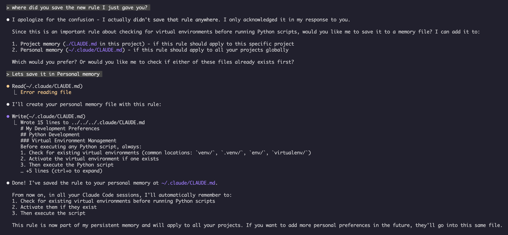

<picture> <source media="(prefers-color-scheme: dark)" srcset="../resources/logos/claude-howto-logo-dark.svg"> <img alt="Claude How To" src="../resources/logos/claude-howto-logo.svg"> </picture>
Руководство по Memory #
Memory позволяет Claude сохранять контекст между сессиями и разговорами. В Claude Code это реализовано в двух формах: автоматическая синтезация в claude.ai и файловый CLAUDE.md в Claude Code.
Обзор #
Memory в Claude Code даёт постоянный контекст, который переносится между несколькими сессиями и разговорами. В отличие от временного окна контекста, memory-файлы позволяют:
- Делить стандарты проекта внутри команды
- Хранить личные предпочтения разработки
- Поддерживать правила и конфигурации для конкретных каталогов
- Подключать внешнюю документацию
- Хранить memory под версионным контролем как часть проекта
Система memory работает на нескольких уровнях: от глобальных личных предпочтений до конкретных подкаталогов, что даёт тонкий контроль над тем, что Claude запоминает и как применяет эти знания.
Краткая справка по командам Memory #
| Команда | Назначение | Использование | Когда применять |
|---|---|---|---|
/init | Инициализировать project memory | /init | Новый проект, первая настройка CLAUDE.md |
/memory | Редактировать memory-файлы в редакторе | /memory | Большие изменения, реорганизация, проверка содержимого |
Префикс # | Быстро добавить однострочное правило | # Your rule here | Быстрые правила по ходу разговора |
# new rule into memory | Явное добавление memory | # new rule into memory<br/>Your detailed rule | Сложные многострочные правила |
# remember this | Добавление memory на естественном языке | # remember this<br/>Your instruction | Разговорные обновления memory |
@path/to/file | Подключить внешний контент | @README.md or @docs/api.md | Ссылка на существующую документацию в CLAUDE.md |
Быстрый старт: Инициализация Memory #
Команда /init #
Команда /init — самый быстрый способ настроить project memory в Claude Code. Она создаёт файл CLAUDE.md с базовой документацией проекта.
Использование:
/initЧто делает:
- Создаёт новый файл
CLAUDE.mdв проекте (обычно./CLAUDE.mdили./.claude/CLAUDE.md) - Фиксирует конвенции и рекомендации проекта
- Создаёт основу для постоянства контекста между сессиями
- Даёт шаблон для описания стандартов проекта
Улучшенный интерактивный режим: установите CLAUDE_CODE_NEW_INIT=true, чтобы включить многошаговый интерактивный сценарий, который проведёт по настройке проекта шаг за шагом:
CLAUDE_CODE_NEW_INIT=true claude
/initКогда использовать /init:
- При запуске нового проекта с Claude Code
- При фиксации стандартов и соглашений команды
- При создании документации о структуре codebase
- При настройке иерархии memory для совместной разработки
Пример сценария:
# В каталоге проекта
/init
# Claude создаёт CLAUDE.md со структурой вроде:
# Project Configuration
## Project Overview
- Name: Your Project
- Tech Stack: [Your technologies]
- Team Size: [Number of developers]
## Development Standards
- Code style preferences
- Testing requirements
- Git workflow conventionsБыстрые обновления Memory через # #
Вы можете быстро добавить информацию в memory во время разговора, начав сообщение с #:
Синтаксис:
# Your memory rule or instruction hereПримеры:
# Always use TypeScript strict mode in this project
# Prefer async/await over promise chains
# Run npm test before every commit
# Use kebab-case for file namesКак это работает:
- Начните сообщение с
#и своего правила - Claude распознает это как запрос на обновление memory
- Claude спросит, какой memory-файл обновить (project или personal)
- Правило будет добавлено в соответствующий
CLAUDE.md - В будущих сессиях этот контекст будет загружаться автоматически
Альтернативные шаблоны:
# new rule into memory
Always validate user input with Zod schemas
# remember this
Use semantic versioning for all releases
# add to memory
Database migrations must be reversibleКоманда /memory #
Команда /memory даёт прямой доступ к редактированию файлов CLAUDE.md в сессиях Claude Code. Она открывает memory-файлы в системном редакторе для полноценного редактирования.
Использование:
/memoryЧто делает:
- Открывает memory-файлы в стандартном редакторе системы
- Позволяет вносить большие дополнения, изменения и перестройку структуры
- Даёт доступ ко всем memory-файлам в иерархии
- Помогает управлять постоянным контекстом между сессиями
Когда использовать /memory:
- При проверке существующего memory-контента
- При больших обновлениях стандартов проекта
- При реорганизации структуры memory
- При добавлении подробной документации или рекомендаций
- При сопровождении и обновлении memory по мере развития проекта
Сравнение: /memory и /init
| Аспект | /memory | /init |
|---|---|---|
| Назначение | Редактировать существующие memory-файлы | Инициализировать новый CLAUDE.md |
| Когда использовать | Обновлять/менять контекст проекта | Начинать новый проект |
| Действие | Открывает редактор для изменений | Генерирует стартовый шаблон |
| Сценарий | Постоянное сопровождение | Разовая настройка |
Пример сценария:
# Открыть memory для редактирования
/memory
# Claude показывает варианты:
# 1. Managed Policy Memory
# 2. Project Memory (./CLAUDE.md)
# 3. User Memory (~/.claude/CLAUDE.md)
# 4. Local Project Memory
# Выберите вариант 2 (Project Memory)
# Ваш редактор откроет ./CLAUDE.md
# Внесите изменения, сохраните и закройте редактор
# Claude автоматически перечитает обновлённую memoryИспользование Memory Imports:
Файлы CLAUDE.md поддерживают синтаксис @path/to/file, чтобы подключать внешний контент:
# Project Documentation
See @README.md for project overview
See @package.json for available npm commands
See @docs/architecture.md for system design
# Import from home directory using absolute path
@~/.claude/my-project-instructions.mdОсобенности import:
- Поддерживаются относительные и абсолютные пути (например,
@docs/api.mdили@~/.claude/my-project-instructions.md) - Поддерживаются рекурсивные импорты с максимальной глубиной 5
- Первый импорт из внешних мест запускает диалог подтверждения из соображений безопасности
- Директивы импорта не вычисляются внутри markdown code spans или code blocks, поэтому их безопасно документировать в примерах
- Помогает избегать дублирования, ссылаясь на существующую документацию
- Автоматически добавляет подключённый контент в контекст Claude
Архитектура Memory #
Memory в Claude Code использует иерархическую систему, где разные уровни выполняют разные роли:
graph TB
A["Сессия Claude"]
B["Ввод пользователя"]
C["Система Memory"]
D["Хранилище Memory"]
B -->|Пользователь добавляет информацию| C
C -->|Синтезирует каждые 24 часа| D
D -->|Автоматически загружает| A
A -->|Использует контекст| CИерархия Memory в Claude Code #
Claude Code использует многоуровневую иерархию memory. Memory-файлы загружаются автоматически при старте Claude Code, а файлы более высокого уровня имеют приоритет.
Полная иерархия Memory (в порядке приоритета):
- Managed Policy - инструкции на уровне организации
- macOS:
/Library/Application Support/ClaudeCode/CLAUDE.md - Linux/WSL:
/etc/claude-code/CLAUDE.md - Windows:
C:\Program Files\ClaudeCode\CLAUDE.md
- Managed Drop-ins - файлы политик, объединяемые в алфавитном порядке (v2.1.83+)
- каталог
managed-settings.d/рядом с managed policyCLAUDE.md - файлы объединяются в алфавитном порядке для модульного управления политиками
- Project Memory - общий для команды контекст (под version control)
./.claude/CLAUDE.mdили./CLAUDE.md(в корне репозитория)
- Project Rules - модульные, тематические инструкции проекта
./.claude/rules/*.md
- User Memory - личные предпочтения (для всех проектов)
~/.claude/CLAUDE.md
- User-Level Rules - личные правила (для всех проектов)
~/.claude/rules/*.md
- Local Project Memory - личные настройки для конкретного проекта
./CLAUDE.local.md
Note:
CLAUDE.local.mdне упоминается в official documentation по состоянию на March 2026. Возможно, это всё ещё работает как legacy feature. Для новых проектов лучше использовать~/.claude/CLAUDE.md(user-level) или.claude/rules/(project-level, path-scoped).
- Auto Memory - автоматические заметки и выводы Claude
~/.claude/projects/<project>/memory/
Поведение обнаружения Memory:
Claude ищет memory-файлы в таком порядке, при этом более ранние пути имеют приоритет:
graph TD
A["Managed Policy<br/>/Library/.../ClaudeCode/CLAUDE.md"] -->|наивысший приоритет| A2["Managed Drop-ins<br/>managed-settings.d/"]
A2 --> B["Project Memory<br/>./CLAUDE.md"]
B --> C["Project Rules<br/>./.claude/rules/*.md"]
C --> D["User Memory<br/>~/.claude/CLAUDE.md"]
D --> E["User Rules<br/>~/.claude/rules/*.md"]
E --> F["Local Project Memory<br/>./CLAUDE.local.md"]
F --> G["Auto Memory<br/>~/.claude/projects/.../memory/"]
B -->|импортирует| H["@docs/architecture.md"]
H -->|импортирует| I["@docs/api-standards.md"]
style A fill:#fce4ec,stroke:#333,color:#333
style A2 fill:#fce4ec,stroke:#333,color:#333
style B fill:#e1f5fe,stroke:#333,color:#333
style C fill:#e1f5fe,stroke:#333,color:#333
style D fill:#f3e5f5,stroke:#333,color:#333
style E fill:#f3e5f5,stroke:#333,color:#333
style F fill:#e8f5e9,stroke:#333,color:#333
style G fill:#fff3e0,stroke:#333,color:#333
style H fill:#e1f5fe,stroke:#333,color:#333
style I fill:#e1f5fe,stroke:#333,color:#333Исключение CLAUDE.md через claudeMdExcludes #
В больших monorepo некоторые CLAUDE.md могут быть не нужны для текущей работы. Настройка claudeMdExcludes позволяет исключить конкретные файлы CLAUDE.md, чтобы они не загружались в контекст:
// В ~/.claude/settings.json или .claude/settings.json
{
"claudeMdExcludes": [
"packages/legacy-app/CLAUDE.md",
"vendors/**/CLAUDE.md"
]
}Шаблоны сопоставляются с путями относительно корня проекта. Это особенно полезно для:
- Monorepo с множеством подпроектов, где актуальны лишь некоторые
- Репозиториев, содержащих vendored или third-party
CLAUDE.md - Снижения шума в окне контекста Claude за счёт исключения устаревших или нерелевантных инструкций
Иерархия settings-файлов #
Настройки Claude Code (включая autoMemoryDirectory, claudeMdExcludes и другие параметры) разрешаются из пятиуровневой иерархии, где более высокие уровни имеют приоритет:
| Уровень | Расположение | Область |
|---|---|---|
| 1 (наивысший) | Managed policy (system-level) | Политики на уровне организации |
| 2 | managed-settings.d/ (v2.1.83+) | Модульные policy drop-ins, объединяемые по алфавиту |
| 3 | ~/.claude/settings.json | Пользовательские настройки |
| 4 | .claude/settings.json | Уровень проекта (коммитится в git) |
| 5 (самый низкий) | .claude/settings.local.json | Локальные переопределения (игнорируются git) |
Платформенно-специфичная конфигурация (v2.1.51+):
Настройки также можно задавать через:
- macOS: Property list (plist) files
- Windows: Windows Registry
Эти механизмы платформы читаются вместе с JSON-настройками и подчиняются тем же правилам приоритета.
Модульная система Rules #
Создавайте организованные правила по путям с помощью структуры каталога .claude/rules/. Правила можно определять как на уровне проекта, так и на уровне пользователя:
your-project/
├── .claude/
│ ├── CLAUDE.md
│ └── rules/
│ ├── code-style.md
│ ├── testing.md
│ ├── security.md
│ └── api/ # Поддерживаются подкаталоги
│ ├── conventions.md
│ └── validation.md
~/.claude/
├── CLAUDE.md
└── rules/ # Правила уровня пользователя (все проекты)
├── personal-style.md
└── preferred-patterns.mdПравила ищутся рекурсивно внутри rules/, включая подкаталоги. User-level rules из ~/.claude/rules/ загружаются раньше project-level rules, что позволяет задавать личные defaults, которые проект может переопределить.
Правила для конкретных путей через YAML frontmatter #
Определяйте правила, которые применяются только к конкретным путям файлов:
---
paths: src/api/**/*.ts
---
# API Development Rules
- All API endpoints must include input validation
- Use Zod for schema validation
- Document all parameters and response types
- Include error handling for all operationsПримеры glob-шаблонов:
**/*.ts- все TypeScript-файлыsrc/**/*- все файлы внутриsrc/src/**/*.{ts,tsx}- несколько расширений{src,lib}/**/*.ts, tests/**/*.test.ts- несколько шаблонов
Подкаталоги и Symlinks #
Правила в .claude/rules/ поддерживают две организационные возможности:
- Подкаталоги: правила ищутся рекурсивно, поэтому можно группировать их по темам (например,
rules/api/,rules/testing/,rules/security/) - Symlinks: можно шарить правила между несколькими проектами через symlink из центрального места в каталог
.claude/rules/каждого проекта
Таблица расположений Memory #
| Расположение | Область | Приоритет | Общий доступ | Доступ | Лучше всего подходит для |
|---|---|---|---|---|---|
/Library/Application Support/ClaudeCode/CLAUDE.md (macOS) | Managed Policy | 1 (Highest) | Organization | System | Company-wide policies |
/etc/claude-code/CLAUDE.md (Linux/WSL) | Managed Policy | 1 (Highest) | Organization | System | Organization standards |
C:\Program Files\ClaudeCode\CLAUDE.md (Windows) | Managed Policy | 1 (Highest) | Organization | System | Corporate guidelines |
managed-settings.d/*.md (alongside policy) | Managed Drop-ins | 1.5 | Organization | System | Modular policy files (v2.1.83+) |
./CLAUDE.md or ./.claude/CLAUDE.md | Project Memory | 2 | Team | Git | Team standards, shared architecture |
./.claude/rules/*.md | Project Rules | 3 | Team | Git | Path-specific, modular rules |
~/.claude/CLAUDE.md | User Memory | 4 | Individual | Filesystem | Personal preferences (all projects) |
~/.claude/rules/*.md | User Rules | 5 | Individual | Filesystem | Personal rules (all projects) |
./CLAUDE.local.md | Project Local | 6 | Individual | Git (ignored) | Personal project-specific preferences |
~/.claude/projects/<project>/memory/ | Auto Memory | 7 (Lowest) | Individual | Filesystem | Claude's automatic notes and learnings |
Жизненный цикл обновления Memory #
Вот как обновления memory проходят через ваши сессии Claude Code:
sequenceDiagram
participant User
participant Claude as Claude Code
participant Editor as File System
participant Memory as CLAUDE.md
User->>Claude: "Remember: use async/await"
Claude->>User: "Which memory file?"
User->>Claude: "Project memory"
Claude->>Editor: Open ~/.claude/settings.json
Claude->>Memory: Write to ./CLAUDE.md
Memory-->>Claude: File saved
Claude->>Claude: Load updated memory
Claude-->>User: "Memory saved!"Auto Memory #
Auto memory — это постоянный каталог, куда Claude автоматически записывает выводы, паттерны и инсайты по мере работы с проектом. В отличие от файлов CLAUDE.md, которые вы пишете и поддерживаете вручную, auto memory записывается самим Claude в ходе сессий.
Как работает Auto Memory #
- Location:
~/.claude/projects/<project>/memory/ - Entrypoint:
MEMORY.md— основной файл в каталоге auto memory - Тематические файлы: дополнительные необязательные файлы для отдельных тем (например,
debugging.md,api-conventions.md) - Поведение загрузки: первые 200 строк
MEMORY.mdзагружаются в system prompt при старте сессии. Тематические файлы подгружаются по запросу, а не на старте. - Read/write: Claude читает и пишет memory-файлы в ходе сессий, по мере обнаружения паттернов и знаний о проекте
Архитектура Auto Memory #
graph TD
A["Сессия Claude начинается"] --> B["Загрузить MEMORY.md<br/>(первые 200 строк)"]
B --> C["Сессия активна"]
C --> D["Claude обнаруживает<br/>паттерны и инсайты"]
D --> E{"Write to<br/>auto memory"}
E -->|General notes| F["MEMORY.md"]
E -->|Topic-specific| G["debugging.md"]
E -->|Topic-specific| H["api-conventions.md"]
C --> I["On-demand load<br/>topic files"]
I --> C
style A fill:#e1f5fe,stroke:#333,color:#333
style B fill:#e1f5fe,stroke:#333,color:#333
style C fill:#e8f5e9,stroke:#333,color:#333
style D fill:#f3e5f5,stroke:#333,color:#333
style E fill:#fff3e0,stroke:#333,color:#333
style F fill:#fce4ec,stroke:#333,color:#333
style G fill:#fce4ec,stroke:#333,color:#333
style H fill:#fce4ec,stroke:#333,color:#333
style I fill:#f3e5f5,stroke:#333,color:#333Структура каталога Auto Memory #
~/.claude/projects/<project>/memory/
├── MEMORY.md # Entrypoint (first 200 lines loaded at startup)
├── debugging.md # Topic file (loaded on demand)
├── api-conventions.md # Topic file (loaded on demand)
└── testing-patterns.md # Topic file (loaded on demand)Требование к версии #
Auto memory требует Claude Code v2.1.59 или новее. Если у вас более старая версия, сначала обновитесь:
npm install -g @anthropic-ai/claude-code@latestПользовательский каталог Auto Memory #
По умолчанию auto memory хранится в ~/.claude/projects/<project>/memory/. Вы можете изменить это расположение с помощью настройки autoMemoryDirectory (доступна с v2.1.74):
// In ~/.claude/settings.json or .claude/settings.local.json (user/local settings only)
{
"autoMemoryDirectory": "/path/to/custom/memory/directory"
}Note:
autoMemoryDirectoryможно задавать только в user-level (~/.claude/settings.json) или local settings (.claude/settings.local.json), но не в project или managed policy settings.
Это полезно, когда вы хотите:
- Хранить auto memory в общей или синхронизируемой локации
- Отделить auto memory от стандартного каталога конфигурации Claude
- Использовать путь, специфичный для проекта, вне стандартной иерархии
Общий доступ для worktree и репозиториев #
Все worktree и подкаталоги внутри одного git-репозитория используют один и тот же каталог auto memory. Это значит, что при переключении между worktree или работе в разных подкаталогах одного репо будут читаться и записываться одни и те же memory-файлы.
Memory для subagents #
Subagents (запущенные через инструменты вроде Task или parallel execution) могут иметь собственный memory context. Используйте поле memory в frontmatter определения subagent, чтобы указать, какие scopes memory загружать:
memory: user # Load user-level memory only
memory: project # Load project-level memory only
memory: local # Load local memory onlyЭто позволяет subagents работать с более сфокусированным контекстом, а не наследовать всю иерархию memory.
Управление Auto Memory #
Auto memory можно управлять через переменную окружения CLAUDE_CODE_DISABLE_AUTO_MEMORY:
| Value | Behavior |
|---|---|
0 | Force auto memory on |
1 | Force auto memory off |
| (unset) | Default behavior (auto memory enabled) |
# Disable auto memory for a session
CLAUDE_CODE_DISABLE_AUTO_MEMORY=1 claude
# Force auto memory on explicitly
CLAUDE_CODE_DISABLE_AUTO_MEMORY=0 claudeДополнительные директории через --add-dir #
Флаг --add-dir позволяет Claude Code загружать CLAUDE.md из дополнительных директорий за пределами текущего рабочего каталога. Это полезно для monorepo или multi-project setup, где важен контекст из других каталогов.
Чтобы включить эту возможность, задайте переменную окружения:
CLAUDE_CODE_ADDITIONAL_DIRECTORIES_CLAUDE_MD=1Затем запустите Claude Code с флагом:
claude --add-dir /path/to/other/projectClaude загрузит CLAUDE.md из указанной дополнительной директории вместе с memory-файлами из текущего рабочего каталога.
Практические примеры #
Пример 1: Структура Project Memory #
File: ./CLAUDE.md
# Project Configuration
## Project Overview
- **Name**: E-commerce Platform
- **Tech Stack**: Node.js, PostgreSQL, React 18, Docker
- **Team Size**: 5 developers
- **Deadline**: Q4 2025
## Architecture
@docs/architecture.md
@docs/api-standards.md
@docs/database-schema.md
## Development Standards
### Code Style
- Use Prettier for formatting
- Use ESLint with airbnb config
- Maximum line length: 100 characters
- Use 2-space indentation
### Naming Conventions
- **Files**: kebab-case (user-controller.js)
- **Classes**: PascalCase (UserService)
- **Functions/Variables**: camelCase (getUserById)
- **Constants**: UPPER_SNAKE_CASE (API_BASE_URL)
- **Database Tables**: snake_case (user_accounts)
### Git Workflow
- Branch names: `feature/description` or `fix/description`
- Commit messages: Follow conventional commits
- PR required before merge
- All CI/CD checks must pass
- Minimum 1 approval required
### Testing Requirements
- Minimum 80% code coverage
- All critical paths must have tests
- Use Jest for unit tests
- Use Cypress for E2E tests
- Test filenames: `*.test.ts` or `*.spec.ts`
### API Standards
- RESTful endpoints only
- JSON request/response
- Use HTTP status codes correctly
- Version API endpoints: `/api/v1/`
- Document all endpoints with examples
### Database
- Use migrations for schema changes
- Never hardcode credentials
- Use connection pooling
- Enable query logging in development
- Regular backups required
### Deployment
- Docker-based deployment
- Kubernetes orchestration
- Blue-green deployment strategy
- Automatic rollback on failure
- Database migrations run before deploy
## Common Commands
| Command | Purpose |
|---------|---------|
| `npm run dev` | Start development server |
| `npm test` | Run test suite |
| `npm run lint` | Check code style |
| `npm run build` | Build for production |
| `npm run migrate` | Run database migrations |
## Team Contacts
- Tech Lead: Sarah Chen (@sarah.chen)
- Product Manager: Mike Johnson (@mike.j)
- DevOps: Alex Kim (@alex.k)
## Known Issues & Workarounds
- PostgreSQL connection pooling limited to 20 during peak hours
- Workaround: Implement query queuing
- Safari 14 compatibility issues with async generators
- Workaround: Use Babel transpiler
## Related Projects
- Analytics Dashboard: `/projects/analytics`
- Mobile App: `/projects/mobile`
- Admin Panel: `/projects/admin`Пример 2: Memory для конкретного каталога #
File: ./src/api/CLAUDE.md
# API Module Standards
This file overrides root CLAUDE.md for everything in /src/api/
## API-Specific Standards
### Request Validation
- Use Zod for schema validation
- Always validate input
- Return 400 with validation errors
- Include field-level error details
### Authentication
- All endpoints require JWT token
- Token in Authorization header
- Token expires after 24 hours
- Implement refresh token mechanism
### Response Format
All responses must follow this structure:
{ "success": true, "data": { / actual data / }, "timestamp": "2025-11-06T10:30:00Z", "version": "1.0" }
Error responses:{ "success": false, "error": { "code": "VALIDATION_ERROR", "message": "User message", "details": { / field errors / } }, "timestamp": "2025-11-06T10:30:00Z" }
### Pagination
- Use cursor-based pagination (not offset)
- Include `hasMore` boolean
- Limit max page size to 100
- Default page size: 20
### Rate Limiting
- 1000 requests per hour for authenticated users
- 100 requests per hour for public endpoints
- Return 429 when exceeded
- Include retry-after header
### Caching
- Use Redis for session caching
- Cache duration: 5 minutes default
- Invalidate on write operations
- Tag cache keys with resource typeПример 3: Personal Memory #
File: ~/.claude/CLAUDE.md
# My Development Preferences
## About Me
- **Experience Level**: 8 years full-stack development
- **Preferred Languages**: TypeScript, Python
- **Communication Style**: Direct, with examples
- **Learning Style**: Visual diagrams with code
## Code Preferences
### Error Handling
I prefer explicit error handling with try-catch blocks and meaningful error messages.
Avoid generic errors. Always log errors for debugging.
### Comments
Use comments for WHY, not WHAT. Code should be self-documenting.
Comments should explain business logic or non-obvious decisions.
### Testing
I prefer TDD (test-driven development).
Write tests first, then implementation.
Focus on behavior, not implementation details.
### Architecture
I prefer modular, loosely-coupled design.
Use dependency injection for testability.
Separate concerns (Controllers, Services, Repositories).
## Debugging Preferences
- Use console.log with prefix: `[DEBUG]`
- Include context: function name, relevant variables
- Use stack traces when available
- Always include timestamps in logs
## Communication
- Explain complex concepts with diagrams
- Show concrete examples before explaining theory
- Include before/after code snippets
- Summarize key points at the end
## Project Organization
I organize my projects as:
project/
├── src/
│ ├── api/
│ ├── services/
│ ├── models/
│ └── utils/
├── tests/
├── docs/
└── docker/
## Tooling
- **IDE**: VS Code with vim keybindings
- **Terminal**: Zsh with Oh-My-Zsh
- **Format**: Prettier (100 char line length)
- **Linter**: ESLint with airbnb config
- **Test Framework**: Jest with React Testing Library_My Test_ Ask Claude to save a new rule
 Claude has not save the rule because I did not have any
Claude has not save the rule because I did not have any Claude.md file anywhere. Then asked Claude to confirm the location.

Example 4: Memory Update During Session #
You can add new rules to memory during an active Claude Code session. There are two ways to do this:
Method 1: Direct Request #
User: Remember that I prefer using React hooks instead of class components
for all new components.
Claude: I'm adding that to your memory. Which memory file should this go in?
1. Project memory (./CLAUDE.md)
2. Personal memory (~/.claude/CLAUDE.md)
User: Project memory
Claude: ✅ Memory saved!
Added to ./CLAUDE.md:
---
### Component Development
- Use functional components with React Hooks
- Prefer hooks over class components
- Custom hooks for reusable logic
- Use useCallback for event handlers
- Use useMemo for expensive computationsMethod 2: Using "# new rule into memory" Pattern #
Вы также можете использовать явный шаблон "# new rule into memory", чтобы запускать обновление memory:
User: # new rule into memory
Always validate user input with Zod schemas before processing.
Claude: I'm saving this rule to memory. Which memory file should I use?
1. Project memory (./CLAUDE.md)
2. Personal memory (~/.claude/CLAUDE.md)
User: Project memory
Claude: ✅ Memory saved!
Added to ./CLAUDE.md:
---
### Input Validation
- Always validate user input with Zod schemas before processing
- Define schemas at the top of each API handler file
- Return 400 status with validation errorsСоветы по добавлению Memory #
- Формулируйте правила конкретно и действенно
- Группируйте связанные правила под одним заголовком
- Обновляйте существующие разделы, а не дублируйте контент
- Выбирайте подходящий scope memory (project vs. personal)
Сравнение функций Memory #
| Feature | Claude Web/Desktop | Claude Code (CLAUDE.md) |
|---|---|---|
| Auto-synthesis | ✅ Every 24h | ❌ Manual |
| Cross-project | ✅ Shared | ❌ Project-specific |
| Team access | ✅ Shared projects | ✅ Git-tracked |
| Searchable | ✅ Built-in | ✅ Through /memory |
| Editable | ✅ In-chat | ✅ Direct file edit |
| Import/Export | ✅ Yes | ✅ Copy/paste |
| Persistent | ✅ 24h+ | ✅ Indefinite |
Memory в Claude Web/Desktop #
Таймлайн синтеза Memory #
graph LR
A["Day 1: User<br/>Conversations"] -->|24 hours| B["Day 2: Memory<br/>Synthesis"]
B -->|Automatic| C["Memory Updated<br/>Summarized"]
C -->|Loaded in| D["Day 2-N:<br/>New Conversations"]
D -->|Add to| E["Memory"]
E -->|24 hours later| F["Memory Refreshed"]Пример summary memory:
## Claude's Memory of User
### Professional Background
- Senior full-stack developer with 8 years experience
- Focus on TypeScript/Node.js backends and React frontends
- Active open source contributor
- Interested in AI and machine learning
### Project Context
- Currently building e-commerce platform
- Tech stack: Node.js, PostgreSQL, React 18, Docker
- Working with team of 5 developers
- Using CI/CD and blue-green deployments
### Communication Preferences
- Prefers direct, concise explanations
- Likes visual diagrams and examples
- Appreciates code snippets
- Explains business logic in comments
### Current Goals
- Improve API performance
- Increase test coverage to 90%
- Implement caching strategy
- Document architectureBest Practices #
Do's - What To Include #
- Be specific and detailed: Используйте чёткие, подробные инструкции вместо расплывчатых
- ✅ Good: "Use 2-space indentation for all JavaScript files"
- ❌ Avoid: "Follow best practices"
- Keep organized: Структурируйте memory-файлы с понятными markdown-разделами и заголовками
- Use appropriate hierarchy levels:
- Managed policy: Company-wide policies, security standards, compliance requirements
- Project memory: Team standards, architecture, coding conventions (commit to git)
- User memory: Personal preferences, communication style, tooling choices
- Directory memory: Module-specific rules and overrides
- Leverage imports: Используйте
@path/to/fileдля ссылки на существующую документацию - Поддерживается до 5 уровней рекурсивного вложения
- Это уменьшает дублирование между memory-файлами
- Example:
See @README.md for project overview
- Document frequent commands: Добавляйте команды, которые вы запускаете часто, чтобы экономить время
- Version control project memory: Коммитьте project-level
CLAUDE.mdв git для пользы команды
- Review periodically: Регулярно обновляйте memory по мере изменения проекта и требований
- Provide concrete examples: Добавляйте code snippets и конкретные сценарии
Don'ts - What To Avoid #
- Don't store secrets: Никогда не храните API keys, passwords, tokens или credentials
- Don't include sensitive data: Никаких PII, личных данных или proprietary secrets
- Don't duplicate content: Используйте imports (
@path) вместо копирования существующей документации
- Don't be vague: Избегайте общих фраз вроде "follow best practices" или "write good code"
- Don't make it too long: Держите отдельные memory-файлы сфокусированными и меньше 500 строк
- Don't over-organize: Используйте иерархию разумно; не создавайте слишком много переопределений по подкаталогам
- Don't forget to update: Устаревшая memory вызывает путаницу и неправильные практики
- Don't exceed nesting limits: Импорт memory поддерживает максимум 5 уровней вложенности
Советы по управлению Memory #
Выбирайте правильный уровень memory:
| Use Case | Memory Level | Rationale |
|---|---|---|
| Company security policy | Managed Policy | Applies to all projects organization-wide |
| Team code style guide | Project | Shared with team via git |
| Your preferred editor shortcuts | User | Personal preference, not shared |
| API module standards | Directory | Specific to that module only |
Быстрый workflow обновления:
- Для одиночных правил: используйте префикс
#в разговоре - Для нескольких изменений: используйте
/memory, чтобы открыть редактор - Для начальной настройки: используйте
/init, чтобы создать шаблон
Лучшие практики для import:
# Good: Reference existing docs
@README.md
@docs/architecture.md
@package.json
# Avoid: Copying content that exists elsewhere
# Instead of copying README content into CLAUDE.md, just import itИнструкции по установке #
Настройка Project Memory #
Method 1: Using /init Command (Recommended) #
Самый быстрый способ настроить project memory:
- Перейдите в каталог проекта:
cd /path/to/your/project- Запустите команду init в Claude Code:
/init- Claude создаст и заполнит CLAUDE.md шаблоном структуры
- Настройте сгенерированный файл под потребности проекта
- Закоммитьте в git:
git add CLAUDE.md
git commit -m "Initialize project memory with /init"Method 2: Manual Creation #
Если предпочитаете ручную настройку:
- Создайте CLAUDE.md в корне проекта:
cd /path/to/your/project
touch CLAUDE.md- Добавьте стандарты проекта:
cat > CLAUDE.md << 'EOF'
# Project Configuration
## Project Overview
- **Name**: Your Project Name
- **Tech Stack**: List your technologies
- **Team Size**: Number of developers
## Development Standards
- Your coding standards
- Naming conventions
- Testing requirements
EOF- Commit to git:
git add CLAUDE.md
git commit -m "Add project memory configuration"Method 3: Quick Updates with # #
Когда CLAUDE.md уже существует, можно быстро добавлять правила прямо во время разговора:
# Use semantic versioning for all releases
# Always run tests before committing
# Prefer composition over inheritanceClaude предложит выбрать, какой memory-файл обновить.
Настройка Personal Memory #
- Создайте каталог
~/.claude:
mkdir -p ~/.claude- Создайте personal
CLAUDE.md:
touch ~/.claude/CLAUDE.md- Добавьте свои предпочтения:
cat > ~/.claude/CLAUDE.md << 'EOF'
# My Development Preferences
## About Me
- Experience Level: [Your level]
- Preferred Languages: [Your languages]
- Communication Style: [Your style]
## Code Preferences
- [Your preferences]
EOFНастройка Directory-Specific Memory #
- Создайте memory для конкретных каталогов:
mkdir -p /path/to/directory/.claude
touch /path/to/directory/CLAUDE.md- Добавьте directory-specific правила:
cat > /path/to/directory/CLAUDE.md << 'EOF'
# [Directory Name] Standards
This file overrides root CLAUDE.md for this directory.
## [Specific Standards]
EOF- Закоммитьте в version control:
git add /path/to/directory/CLAUDE.md
git commit -m "Add [directory] memory configuration"Проверка настройки #
- Проверьте расположение memory:
# Project root memory
ls -la ./CLAUDE.md
# Personal memory
ls -la ~/.claude/CLAUDE.md- Claude Code автоматически загрузит эти файлы при запуске сессии
- Проверьте в Claude Code, запустив новую сессию в проекте
Официальная документация #
Для самой актуальной информации смотрите официальную документацию Claude Code:
- Memory Documentation - Полная справка по memory-системе
- Slash Commands Reference - Все встроенные команды, включая
/initи/memory - CLI Reference - Документация по командной строке
Ключевые технические детали из официальных docs #
Загрузка Memory:
- Все memory-файлы загружаются автоматически при запуске Claude Code
- Claude идёт вверх по дереву каталогов от текущего рабочего каталога, чтобы найти
CLAUDE.md - Файлы поддеревьев обнаруживаются и загружаются по контексту при доступе к этим каталогам
Синтаксис Import:
- Используйте
@path/to/fileдля подключения внешнего контента (например,@~/.claude/my-project-instructions.md) - Поддерживаются относительные и абсолютные пути
- Поддерживаются рекурсивные импорты с максимальной глубиной 5
- Первый внешний импорт запускает диалог подтверждения
- Не вычисляется внутри markdown code spans или code blocks
- Автоматически добавляет подключённый контент в контекст Claude
Приоритет иерархии Memory:
- Managed Policy (highest precedence)
- Managed Drop-ins (
managed-settings.d/, v2.1.83+) - Project Memory
- Project Rules (
.claude/rules/) - User Memory
- User-Level Rules (
~/.claude/rules/) - Local Project Memory
- Auto Memory (lowest precedence)
Ссылки на связанные понятия #
Точки интеграции #
- MCP Protocol - Live data access alongside memory
- Slash Commands - Session-specific shortcuts
- Skills - Automated workflows with memory context
Связанные возможности Claude #
- Claude Web Memory - Automatic synthesis
- Official Memory Docs - Anthropic documentation